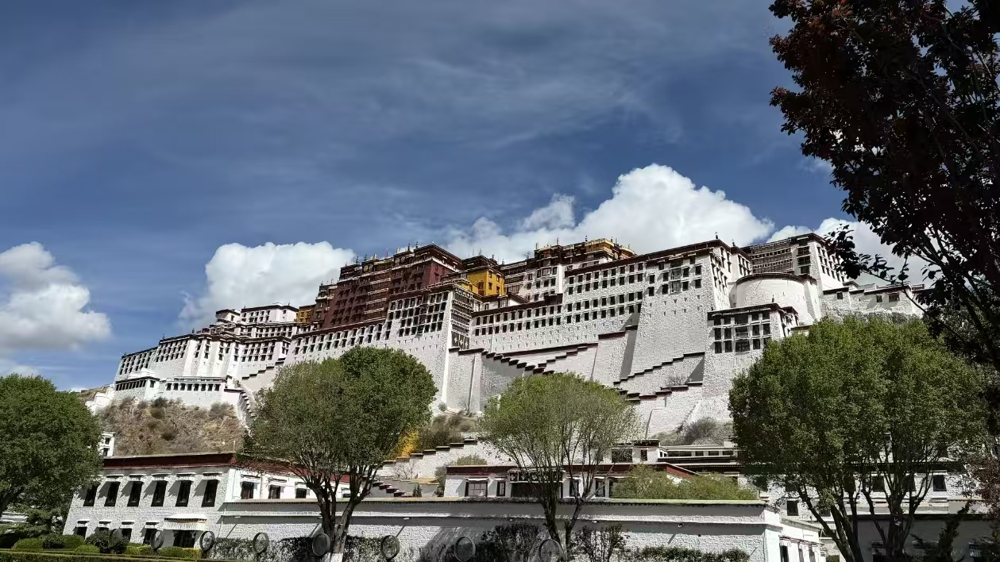
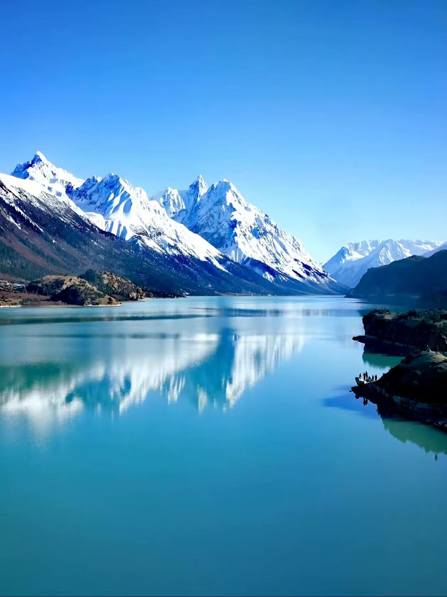
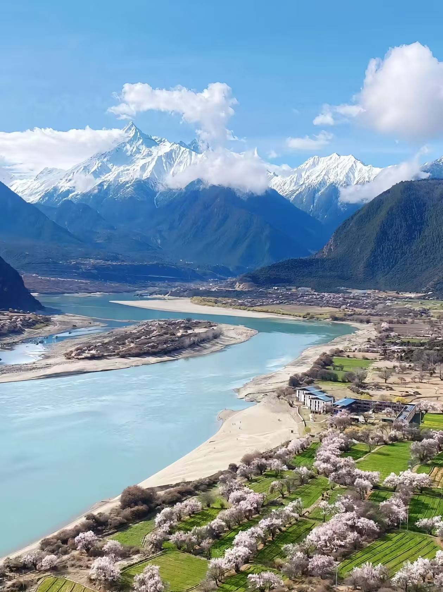
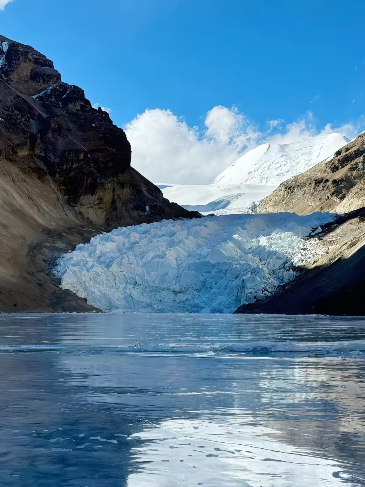
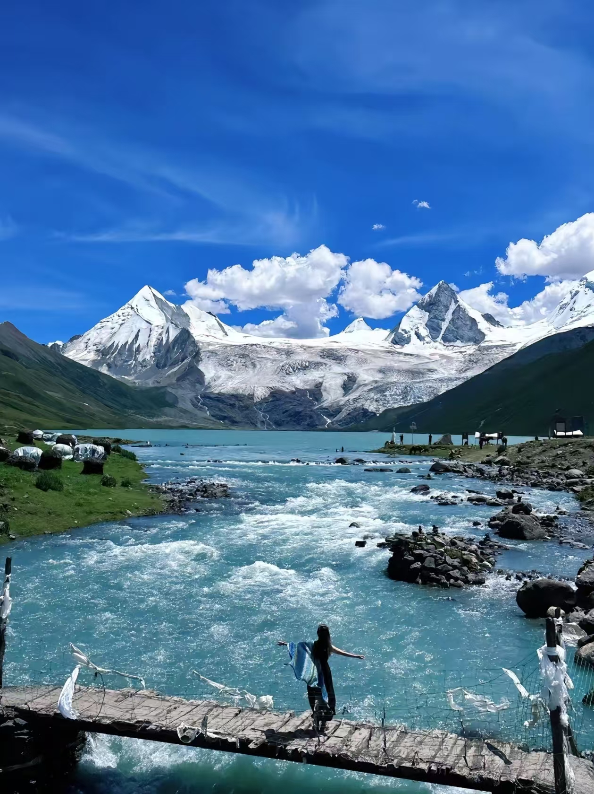

Lhasa Travel Guide 2026: Permits, Altitude and What Nobody Warns You About
Lhasa sits at 3,650 meters above sea level. The air contains about 65% of the oxygen you're used to at sea level. Everything you do there — walking up stairs, carrying a bag, sleeping — requires more effort than it normally would. This isn't a reason not to go. It's just the most important thing to understand before you arrive, because it shapes everything about how you experience the city.
Beyond the altitude, Tibet has entry requirements unlike anywhere else in China. Getting them right before you travel is non-negotiable.
The Tibet Travel Permit: What You Actually Need

The Potala Palace — 13 stories, 1,000 rooms, built on Marpo Ri hill at 3,700 meters. You need a Tibet Travel Permit just to board the flight or train to get here.
Every foreign national — including overseas Chinese passport holders — needs a Tibet Travel Permit to enter Tibet. This is separate from your Chinese visa and not optional. Airlines and train companies check for it before you board. Without it, you don't get on.
You cannot apply for this permit yourself. It must be arranged through a licensed travel agency with foreign visitor authorization. The process takes 15-30 days, so plan well in advance. You'll need a color scan of your passport information page and Chinese visa, a completed application form and a travel itinerary including your accommodation details.
Permit costs run approximately ¥300-500 and are usually bundled into tour packages. Which brings up the other major requirement: foreign visitors cannot travel independently in Tibet. You must have an organized vehicle, guide and accommodation arranged through your agency. The itinerary gets submitted in advance.
If you plan to visit Everest Base Camp, Namtso Lake or Ali Prefecture, you'll also need a Military Area Entry Permit (边防证). Your travel agency handles this too — just flag it when you book. Costs an additional ¥100-200 and requires your passport and Tibet Travel Permit copies.
Altitude Sickness: Take It Seriously

The landscape around Lhasa — snow peaks, turquoise lakes, air thin enough to make your head spin on the first day.
Altitude sickness affects people regardless of age, fitness level or previous high-altitude experience. There's no reliable way to predict who will get it badly. I've met marathon runners who were bedridden in Lhasa and sedentary office workers who felt completely fine. The altitude doesn't care about your fitness.
Symptoms usually appear 6-12 hours after arrival: headache, dizziness, shortness of breath, nausea, fatigue, disrupted sleep. Mild cases are unpleasant but manageable. Severe cases — breathing difficulty, confusion, coughing up pink foam — require immediate medical attention and descent to lower altitude.
The first three days matter most. Don't push yourself. Walk slowly. Take the stairs one at a time. Drink 3-4 liters of warm water daily. Sleep at lower altitude if possible for the first night. Many experienced Tibet travelers take traditional Chinese medicine like rhodiola (红景天) for 1-2 weeks before arrival — it won't eliminate altitude sickness but may reduce severity.
The absolute rules for the first 72 hours: no alcohol, no running, no hot showers or baths, no strenuous exercise. These aren't suggestions. Breaking them significantly increases your risk of serious altitude illness. Your guide will tell you the same thing.
Hotels in Lhasa can arrange oxygen canisters (约¥50/day) for guests with moderate symptoms. For anything serious, the Tibet Military General Hospital (西藏军区总医院) is the best medical facility in Lhasa. Make sure your travel insurance covers high-altitude medical evacuation — this is not optional coverage for a Tibet trip.
The Potala Palace
The best photo of the Potala Palace is from the reflection pool in the square in front — arrive early morning before the crowds.
The Potala Palace is what brought most people to Lhasa, and it earns the journey. Thirteen stories built into the side of Marpo Ri hill, with 1,000 rooms containing chapels, tombs of past Dalai Lamas, libraries and ceremonial halls that have been in continuous use for over 1,300 years.
Tickets are ¥200 in peak season (May-October) and ¥100 in low season. Book 7 days in advance through the official system — your travel agency will handle this. Entry is 9am-4pm with last admission at 3pm. The visit takes about 2 hours along a fixed route from the White Palace through the Red Palace.
Photography is prohibited inside the palace rooms. Bring only what you need — bags get searched at security. The climb involves a lot of stairs. Go slowly, rest frequently, and don't let the altitude catch you by surprise halfway up.
The best photo spot is not from inside the palace but from the reflection pool in Potala Palace Square — arrive early morning before tour groups arrive. The 50 RMB note was designed based on the view from Yaowang Mountain (药王山) observation deck across the square.
Jokhang Temple and Barkhor Street

The Yarlung Tsangpo Valley in spring — peach blossoms along the river with snow peaks behind. This is about 3 hours from Lhasa.
Jokhang Temple is the spiritual center of Tibetan Buddhism — more important to practicing Tibetans than the Potala Palace. The temple houses a 7th-century statue of the 12-year-old Shakyamuni Buddha that is among the most sacred objects in the Tibetan Buddhist world. Open 8am-6pm, tickets ¥85, audio guides available for ¥100.
Dress conservatively — long trousers or skirt, no shorts or sleeveless tops. Follow the crowd clockwise around the circuit. Don't photograph people who are praying without asking first. The second-floor terrace gives a view across the old city and toward the Potala in the distance.
Barkhor Street encircles the temple and is free to walk. It's been a pilgrimage circuit and market for over a millennium. Early morning is when it's most atmospheric — pilgrims completing their circuits, smoke rising from the incense burners, the city waking up around a ritual that hasn't changed in centuries. Later in the day it becomes more crowded with vendors. Both have their appeal.
Sera Monastery and the Debate
Sera Monastery opens 9am-5pm, tickets ¥50. The main reason to come is the monk debate that takes place in the debating courtyard every afternoon from 3pm to 5pm. Monks argue points of Buddhist doctrine using a specific physical vocabulary — sharp hand claps to punctuate arguments, dramatic gestures, rapid-fire exchanges. It's one of the more genuinely striking things I've seen anywhere in China. You can watch from the sides. Stay quiet and don't use flash photography.
Yamdrok Lake Day Trip

Glacier country outside Lhasa — accessible as a day trip but only with your licensed guide and vehicle.
Yamdrok Lake (羊卓雍措) is one of Tibet's three sacred lakes, about 110km from Lhasa. The drive takes 3-4 hours. At 4,441 meters elevation, it's significantly higher than Lhasa — don't attempt this until you've acclimatized for at least 2-3 days in the city first.
The best viewpoint is Gangbala Pass (岗巴拉山口) at 5,030 meters, where you can look down at the full lake. The color shifts from pale turquoise to deep blue depending on the light and time of day. Admission is ¥60. Don't spend too long at the high viewpoint — the altitude is serious and most visitors feel the difference immediately.
Best Time to Visit

Summer in Tibet — glacial rivers running turquoise blue through high mountain valleys.
May-June and September-October are the best windows. Temperatures are comfortable during the day (10-20°C), precipitation is lower than summer, and the landscape is at its most vivid. Visibility is good and the roads to outlying areas are passable.
July and August are peak tourist season — more crowded, prices up 20-30%, afternoon rain common (though usually at night). The oxygen content is actually highest in summer, which helps with altitude acclimatization.
Winter (December-February) is cold at night (down to -10°C) but surprisingly sunny — Lhasa's nickname "Sunlit City" is most accurate in winter. Hotels and tours run 30-50% cheaper, and major sites like the Potala Palace have almost no queues. Some outlying areas including Namtso Lake may be inaccessible due to snow and ice.
Practical Information
Getting there: Fly from Chengdu, Chongqing, Xi'an or other major cities — about 2-3 hours. Your Tibet Travel Permit must be shown before boarding. The train from Xining to Lhasa is a 21-hour journey through extraordinary landscape — the Qinghai-Tibet Railway crosses multiple passes above 4,500 meters and is one of the more remarkable rail journeys in the world. Many travelers do the train one way and fly the other.
Accommodation: Foreign visitors can only stay at designated international-standard hotels. International chains (St. Regis, Shangri-La) operate in Lhasa and are the easiest option for passport check-in. Budget ¥1,500-5,000 per person per day including guided tours in peak season, ¥800-3,000 in low season.
Mobile payments work in Lhasa. Signal coverage is good in the city and along major routes, patchy in remote areas. Bring some cash for smaller purchases and for areas outside the city. The voltage is standard Chinese 220V.